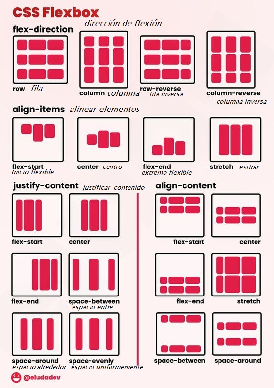
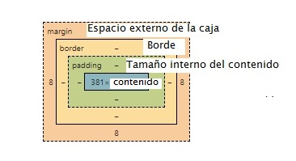

AGREGAR ARCHIVO CSS A HTML:
En head la cabecera ponemos la etiqueta link rel="stylesheet" href="style.css" // Lo ideal es que el
primer archivo css se llame asi pero tambien puedes poner el nombre que desees
En html podemos agregarles nombres a los elementos de forma de clase o id ejm:
h1 class="titulo" y llamamos la clase con . / .titulo{color="red"}
h2 id="subtitulo" y llamamos al id con # / #subtitulo{color="blue"}
NOTA : Una class nos permite reutilizar ese estilo pero el id no. eje:
class = div section
id = imagen o elementro unico
ETIQUETAS que podemos usar una vez ya asignado class . o id#, deben estar dentro de la
etiqueta que posea
el elemento ejm h1 id="bla">Hola
*{} .// Con el * agarramos TODO
color: blue; ..= Color de letra
font-size: 18px; ..= Tamaño de la letra
background-color: antiquewhite; ..= Fondo de la letra
padding-left: 10px; ./ Espacio que podemos agregar de cualquier direccion
font-style: italic; ... / Estilo del texto
margin-top: 8px; ../ Margen que podemos hacer de cualquier direccion si queremos
especificar cada direccion lo podemos hacer en la misma linea, margin= 1px 2px 3px 4px; ,,1=ariiba 2=
derecha 3= abajo 4=izquierda como un reloj
text-align: center; ../ centrar texto
width: 93px; ../ Ancho
height: 26px; .. // Alto
text-transform: uppercase; ../ la letra se haga mayuscula
text-transform: capitalize; ../ la primera letra de cada palabra se pone en mayuscula
text-transform: lowercase; ../ Pone LAS LETRAS en minuscula
font-weight: bold; ../ Negrilla si en vez de bold ponemos numeros 700 aumentara su peso
text-decoration: line-through; .. // Letra tachada
text-decoration: overline; .. // Linea arriba
text-decoration: underline; .. // linea abajo
background-image: url(fondo.jpg); ..// Insertar imagen, en fondo va el
nombre del archivo Evitar que se repite la imagen: asi background-repeat: no-repeat; posicion de imagen background-position:right center; ./ podemos posicionar asi o con numeros ejm
20px 30px background-size: cover; Cambia el tamaño de la imagen de fondo para que cubra todo el espacio de
fondo de la etiqueta sin importar el ancho de la etiqueta. Si la imagen es demasiado grande y tiene una
relación mayor con respecto a la etiqueta en la que se encuentra, esto significa que la imagen se estirará
y, por lo tanto, se recortará en sus bordes. background-size: contain; Contiene la imagen, como sugiere el nombre. Se asegurará de que toda la
imagen se muestre en el fondo sin recortar nada. Si la imagen es mucho más pequeña que la etiqueta, quedará
un espacio vacío que hará que se repita para llenarlo, por lo que podemos usar background-repeat: no-repeat;
regla que mencionamos anteriormente. background-size:cover; En este caso se recortarán partes de la imagen. background-size:contain; La imagen se encoge para ajustarse a la etiqueta section. background-image: linear-gradient(to left,pink,orange); .// Fondo en degrade, podemos elegir dos
colores o legir los colores y desde que direccion
ALINEAR SOLO TEXTO podemos hacerlo solo con text-align: right;
Para que el flexbox funcione debemos colocar display=flex


Navegador nav
ponemos nav
colocamos el ul o li
Horizontalmente en css ponemos nav li display: inline quitar estilo de lista nav ul list-style:none Poner cursor encima y salga una linea debajo de las letrasnav a:hover text-decoration: underline;
Horizontal sin lista nav o # o . si es class o id{display: flex;
justify-content: space-evenly;}
TRUCOS
#ffffff en Google nos muestra paleta de coloresAplasta aqui